Chapter 3 Introduction to graphics in R
3.1 Setup
The package suite tidyverse which includes the package ggplot2 needs to be included.
For installing ggplot2, type install.packages("ggplot2") or equivalently for tidyverse,
type install.packages("tidyverse")
3.2 Introduction to ggplot
The gg of ggplot stands for (layered) “grammar of graphics”
This idea will be further explored by the means of data from the package gapminder(). To install, type install.packages("gapminder") in the RStudio console.
data_gapminder <- gapminder::gapminder 3.2.1 Notes
Why
<-as opposed to=?Why
gapminder::gapminder?What is a dataframe?
A data frame is a rectangular collection of variables (in the columns) and observations (in the rows). It’s different from a ‘mere’ matrix since the columns have variable names usually and can contain different “types,” say numeric, categorical, character and logical all together.
3.3 Questions
3.3.1 Are “Western” countries richer than “Eastern” countries?
The current GDP/capita of Europe (in 2007):
data_eur_2007 <- data_gapminder %>% #what is this funny sign?
dplyr::filter(year == 2007) %>% #isolates variables for year 2007
dplyr::filter(continent == "Europe")
(plot_eur <- ggplot(data = data_eur_2007) +
geom_point(mapping = aes(x = gdpPercap, y = country))
) #why parentheses around the command?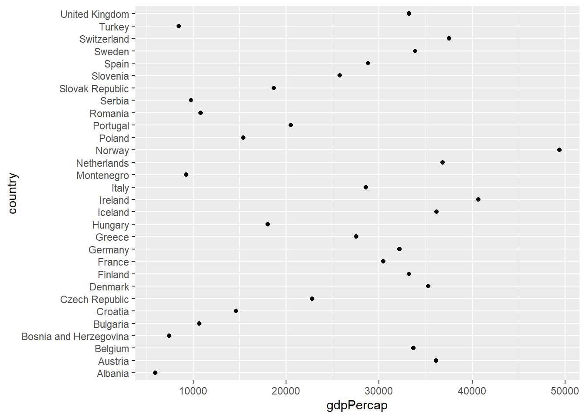
There is high variation—from Albania to Norway.
What about Asian countries in 2007?
data_asia_2007 <- data_gapminder %>%
dplyr::filter(year == 2007) %>% #isolates variables for year 2007
dplyr::filter(continent == "Asia") #collect only Asian countries
(plot_asia <- ggplot(data = data_asia_2007) +
geom_point(mapping = aes(x = gdpPercap, y = country)) +
labs(x = "GDP/capita (USD)",
y = "Country",
title = "GDP per capita in Asia",
subtitle = "Put subtitle here"))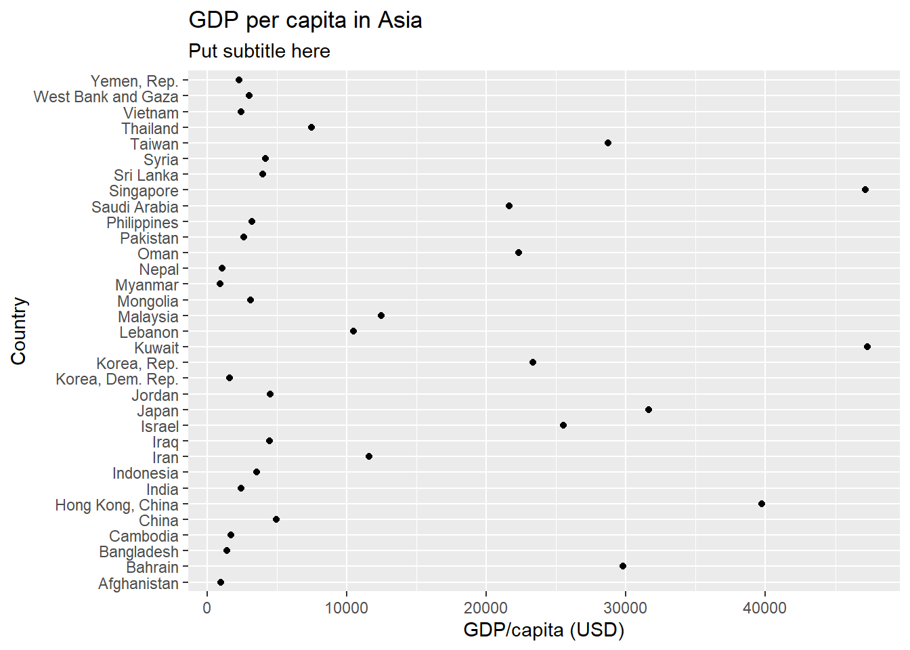
Again, large variation among Asian countries but what about the bounds? What can we say about the question?
3.3.2 Graphics
We start with the function ggplot(). It creates a coordinate system that we will add layers to. The first argument is the dataset to use in the graph.
ggplot(data = data_eur_2007) creates an empty graph. The function geom_point() adds a layer of points to our plot. Each geom function in ggplot2 takes a mapping argument. This defines how variables in our dataset are mapped to aesthetics such as axes, colors, shapes etc. The \(x\) and \(y\) arguments of aes() specify which variables to map to the \(x\) and \(y\) axes. Variables can also be mapped to aesthetics such as colors, shapes, sizes etc.
3.3.3 A More Granular Look: China, India, France, Germany
What about life expectancy in these countries with time?
data_CIFG <- data_gapminder %>%
dplyr::filter(country %in% c("China",
"India",
"France",
"Germany"
)
)
(plot_CIFG_life_exp <- ggplot(data = data_CIFG) +
geom_line(mapping = aes(x = year,
y = lifeExp,
color = country)
)
)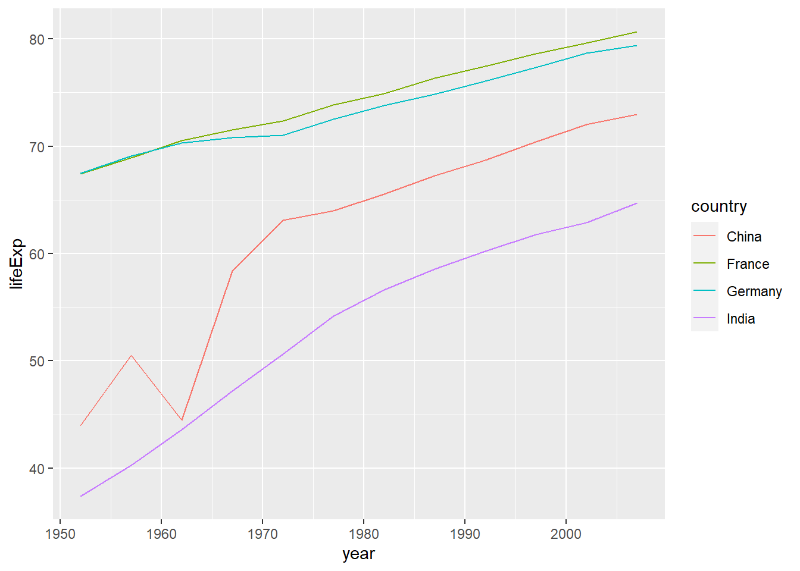
3.3.4 Notes
- Plots can be stored as variables too.
- Other aesthetic attributes: shape, size, alpha (transparency) etc.
- Note where to put the
+sign. geom_line()as opposed to points. Other “geoms” aregeom_smooth,geom_boxplot,geom_baretc.
3.3.5 Faceting
(plot_CIFG_life_cont <- ggplot(data = data_CIFG) +
geom_line(mapping = aes(x = year,
y = lifeExp,
color = country)
) +
facet_wrap(~ continent)
)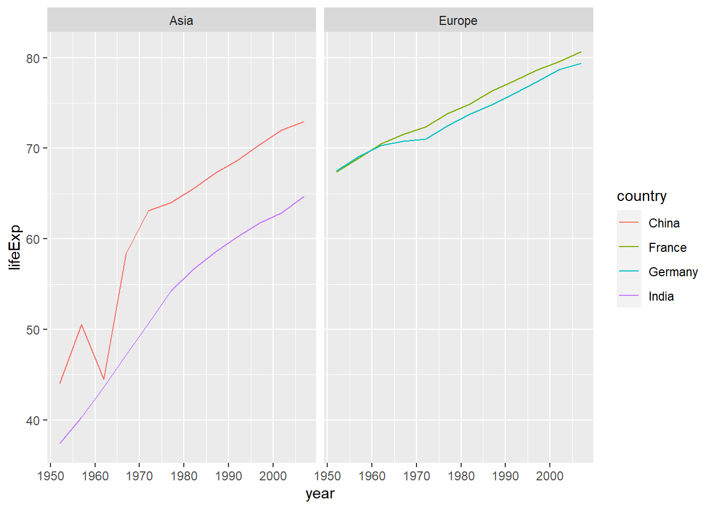
3.3.6 Notes
- To facet on one variable (‘continent’ here), use
facet_wrap(). - To facet on two variables, use
facet_grid()
3.3.7 The Notion of Geoms in ggplot()
Sometimes one needs bar charts, sometimes histograms; at other times scatterplots or lines etc. All these are different “geoms” in ggplot(). Scatterplots can be made with geom_point(), lineplots can be implemented with geom_line(); boxplots require geom_boxplot(), barcharts need geom_bar() and so on. Multiple geoms could be part of the same graph. The library ggplot2 provides over 30 geoms.
Each geom will need “aesthetic” parameters: for example, which datasets form the \(x\) axis? Which ones form the \(y\) axis? What colors to use for different variables?
Somewhat unsurprisingly, not every aesthetic works with every geom. We could set the shape parameter of a point, but cannot do so for a line.
This is how we could include multiple geoms in the same plot:
(plot_CIFG_mult_geom <- ggplot(data = data_CIFG) +
geom_point(mapping = aes(x = year, y = lifeExp, color = country)) +
geom_line(mapping = aes(x = year, y = lifeExp, linetype = country))
)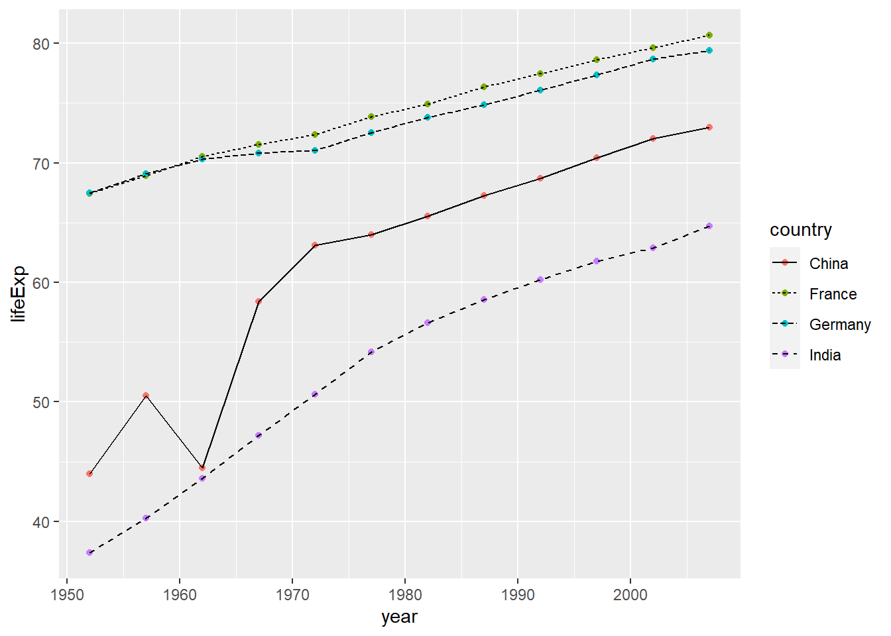
Note however, that we need to rewrite the code for aesthetic parameters: x = year, y = lifeExp. We could re-express the same idea in fewer lines—by passing some common aesthetic parameters as global options—by including them in the main ggplot argument:
plot_CIFG_mult_geom_2 <- ggplot(data = data_CIFG,
mapping = aes(x = year,
y = lifeExp)) +
geom_point(mapping = aes(color = country)) +
geom_line(mapping = aes(linetype = country))3.3.8 Plotting linear trends: geom_smooth()
Fitting a line to a set of observations is linear smoothing. Fitting a polynomial of degree 2 is quadratic smoothing and so on. When we wish to plot observations and the best linear fit computed by linear regression, we need to use geom_smooth() with the option method = "lm" where lm() stands for “linear model.”
3.3.9 Question: What was population growth in India?
(plot_CIFG_pop_Ind <- ggplot(data = filter(data_CIFG, #why no +?
country == "India"),
mapping = aes(x = year, y = pop)) +
geom_point() +
geom_smooth(method = "lm", se = F) #se = "standard errors"
)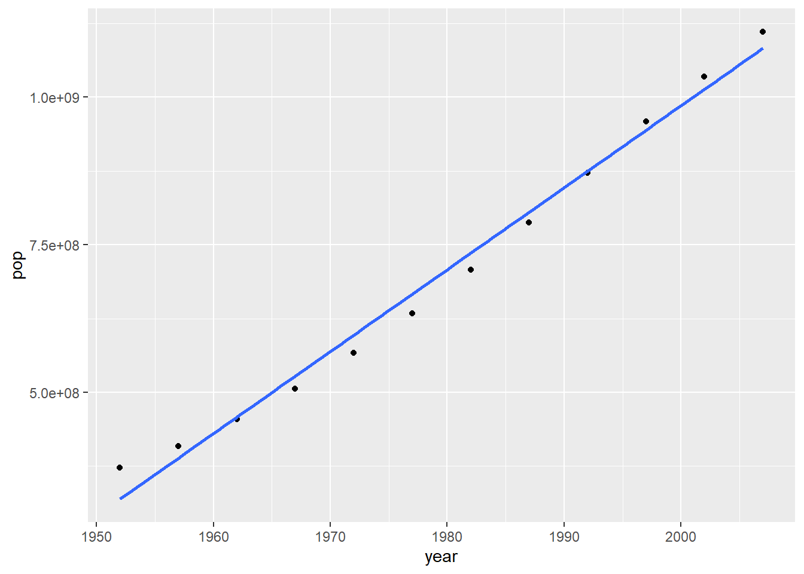
3.3.10 Question: What about the same in China?
(plot_CIFG_pop_China <- ggplot(data = filter(data_CIFG,
country == "China"),
mapping = aes(x = year, y = pop)) +
geom_point() +
geom_smooth(method = "lm") #se = T by default
)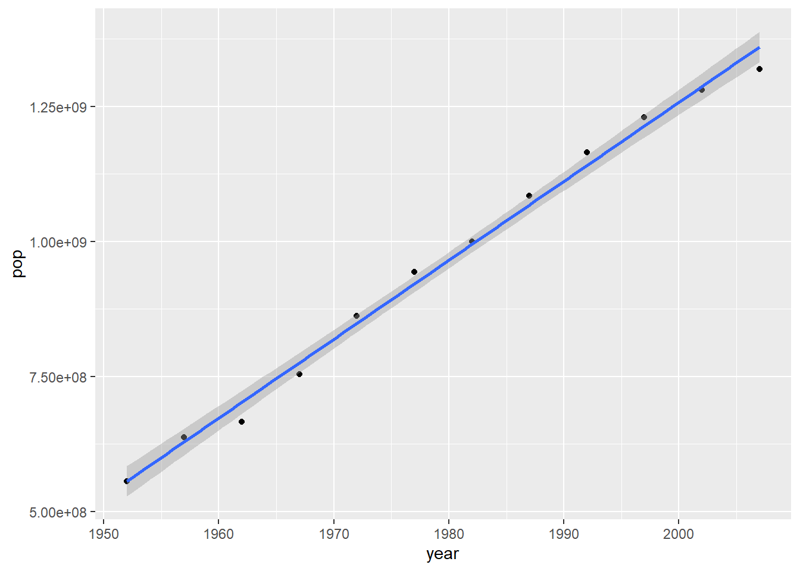
The default smoothing method however is “loess” (locally weighted scatterplot smoothing)
(plot_CIFG_pop_Ind <- ggplot(data = filter(data_CIFG,
continent == "Asia"),
mapping = aes(x = year, y = pop)) +
geom_point(mapping = aes(color = country)) +
geom_smooth()
)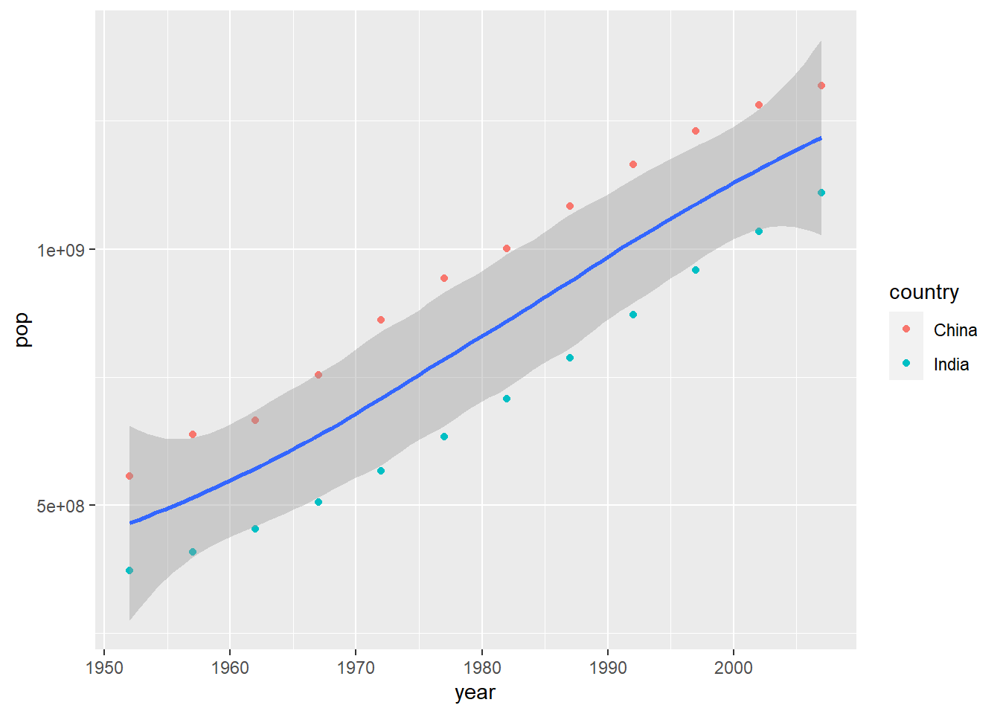
3.3.11 Bar Charts
What about GDP per capita of CIFG countries in 2007?
(plot_CIFG_pop_2007 <- ggplot(data = filter(data_CIFG,
year == 2007),
mapping = aes(x = country,
y = gdpPercap)) +
geom_bar(mapping = aes(fill = country), #what does this mean?
stat = "identity") #what does this mean?
)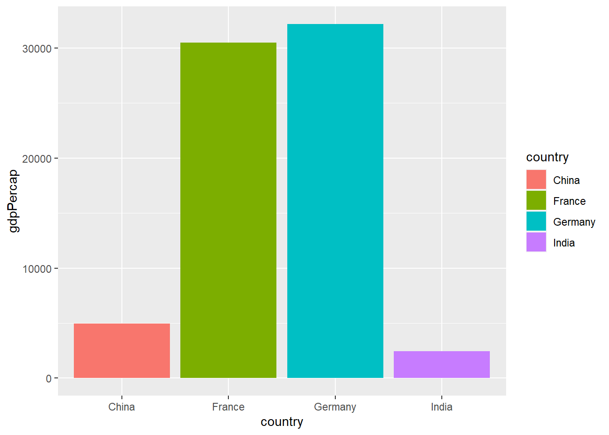
While some types of plots (scatterplots) do not require any transformation—each point is plotted at \(x\) and \(y\) coordinates same as the original value, others (such as boxplots, histograms etc.) require transformations. For example, for boxplots, the median and the interquartile range (IQR) need computing.
3.3.12 Boxplots
(plot_CIFG_box <- ggplot(data = data_CIFG,
mapping = aes(x = country,
y = lifeExp,
color = country)) +
geom_boxplot()
)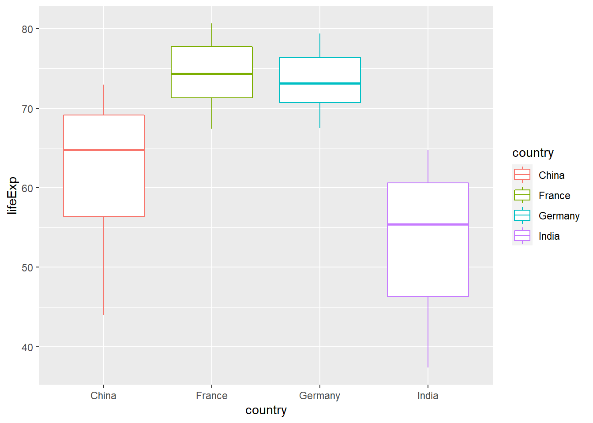
In some cases there are many variables for which we need boxplots; and including all of them on the \(x\) axis may cause their names to squish together, leading to poor visibility. In such cases, one can use the command coord_flip() which, as the name suggests, flips the coordinates—from \(x\) to \(y\) and vice versa.
(plot_eur_box_flip <- ggplot(data = filter(data_gapminder,
continent == "Europe"),
mapping = aes(x = country,
y = lifeExp,
color = country)) +
geom_boxplot() +
coord_flip()
)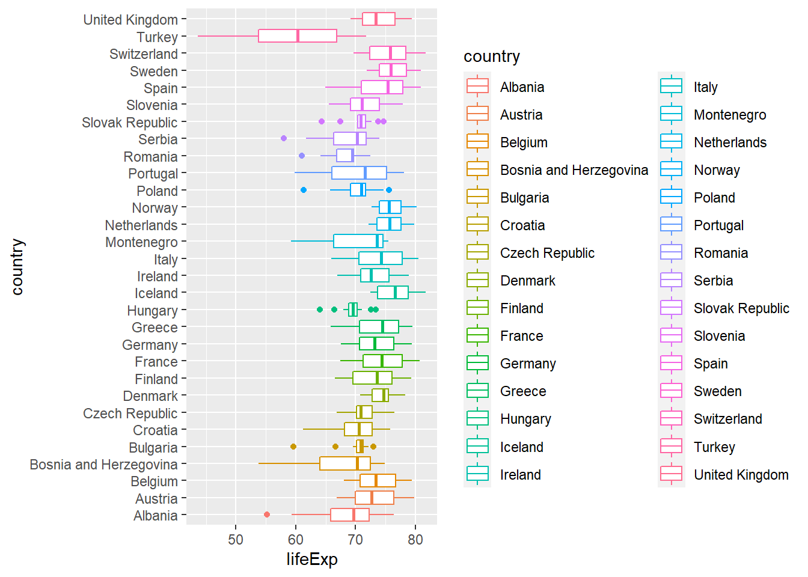
3.3.13 Themes
Themes govern the overall “look” of the plot. The default theme is theme_grey(). However, there are dozens of other themes which one may prefer. A small set of examples is presented here.
(plot_CIFG_theme <- ggplot(data = data_CIFG,
mapping = aes(x = year,
y = lifeExp)) +
geom_point(mapping = aes(color = country)) +
geom_line(mapping = aes(linetype = country)) +
labs(x = "Years",
y = "Life Expectancy",
title = "Illustration of Different Themes") +
theme_classic() #note the classic theme
)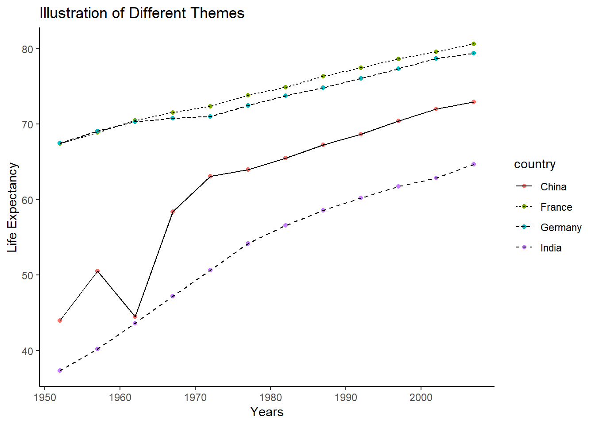
(plot_CIFG_theme <- ggplot(data = data_CIFG,
mapping = aes(x = year,
y = lifeExp)) +
geom_point(mapping = aes(color = country)) +
geom_line(mapping = aes(linetype = country)) +
labs(x = "Years",
y = "Life Expectancy",
title = "Illustration of Different Themes") +
theme_bw() #note the bw theme (black and white)
)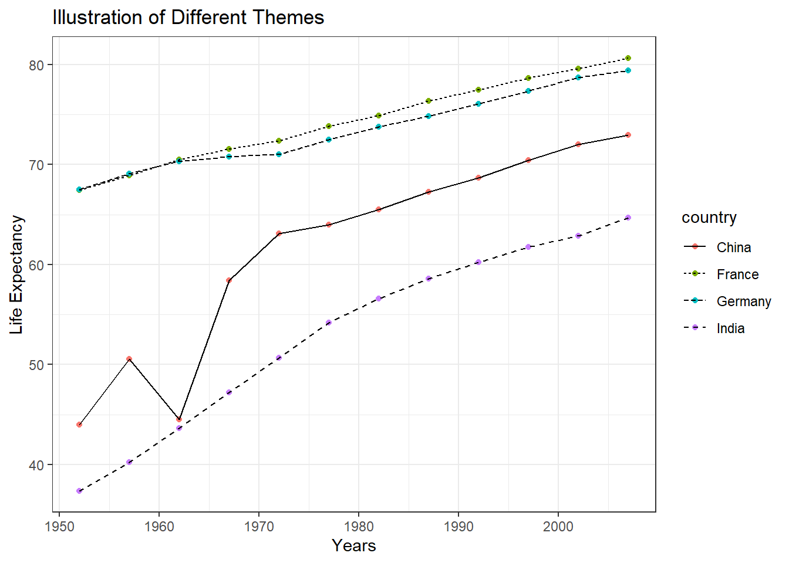
(plot_CIFG_theme <- ggplot(data = data_CIFG,
mapping = aes(x = year,
y = lifeExp)) +
geom_point(mapping = aes(color = country)) +
geom_line(mapping = aes(linetype = country)) +
labs(x = "Years",
y = "Life Expectancy",
caption = "Insert caption here",
title = "Illustration of Different Themes") +
theme_minimal() #note the minimal theme
)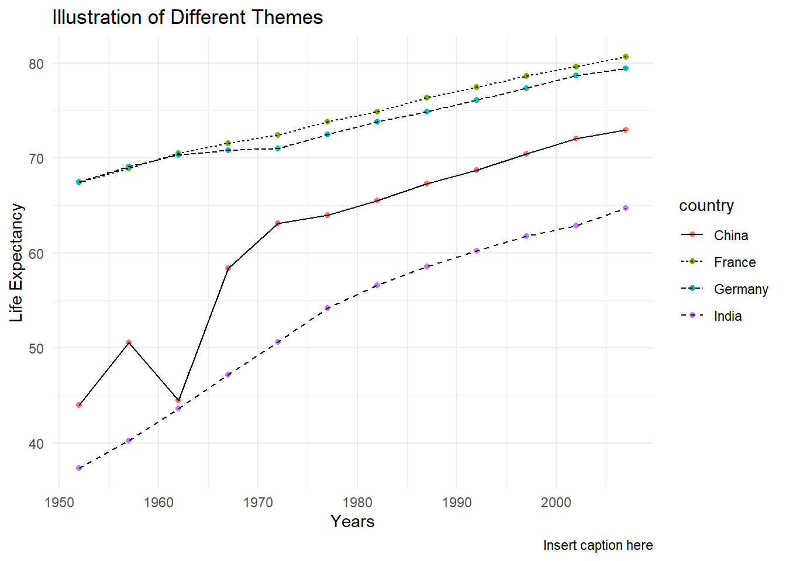
3.4 FAQ: How to Plot Multiple Variables Together?
3.4.1 Wide Versus Long Data
When each column is a separate variable, the dataset is said to be in the “wide” format. In the “long” format, variables are “gathered” together in one column with another containing values.
temp_w <- cbind(1991:2010,
rnorm(20, 0, 1),
rnorm(20, 2, 5),
rnorm(20, 1, 9)) %>%
tibble::as_tibble()
names(temp_w) <- c("year", "N01", "N25", "N19") #data in "wide" format
head(temp_w)## # A tibble: 6 x 4
## year N01 N25 N19
## <dbl> <dbl> <dbl> <dbl>
## 1 1991 -0.964 -2.50 1.87
## 2 1992 -0.584 -6.29 6.44
## 3 1993 -0.391 2.39 -7.07
## 4 1994 1.17 -0.162 -10.2
## 5 1995 -0.762 3.83 12.6
## 6 1996 -0.465 5.53 7.92(ggplot(data = temp_w,
mapping = aes(x = year)) +
geom_line(mapping = aes(y = N01), color = "red") +
geom_line(mapping = aes(y = N25), color = "blue") +
geom_line(mapping = aes(y = N19), color = "green")
) #this method of plotting is not encouraged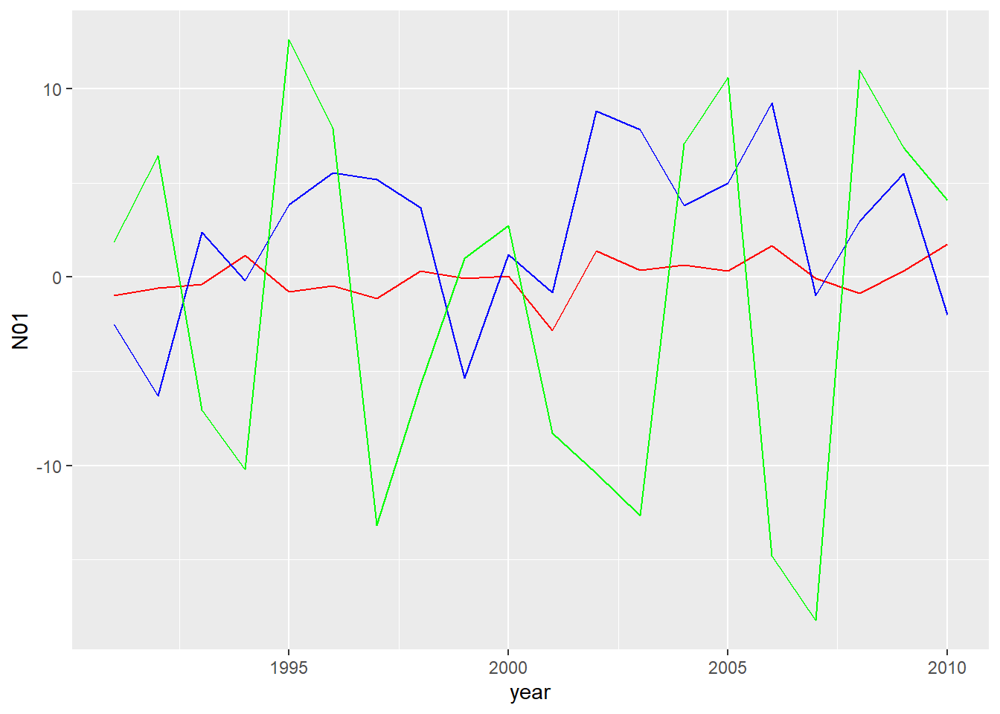
temp_l <- tidyr::gather(temp_w, c("N01", "N25", "N19"),
key = "Normal RV",
value = "Normal Realization"
) #converting data from wide to "long"
head(temp_l)## # A tibble: 6 x 3
## year `Normal RV` `Normal Realization`
## <dbl> <chr> <dbl>
## 1 1991 N01 -0.964
## 2 1992 N01 -0.584
## 3 1993 N01 -0.391
## 4 1994 N01 1.17
## 5 1995 N01 -0.762
## 6 1996 N01 -0.465(ggplot(data = temp_l,
mapping = aes(x = year,
y = `Normal Realization`,
color = `Normal RV`)) +
geom_line()
) #the preferred way of plotting is in the long format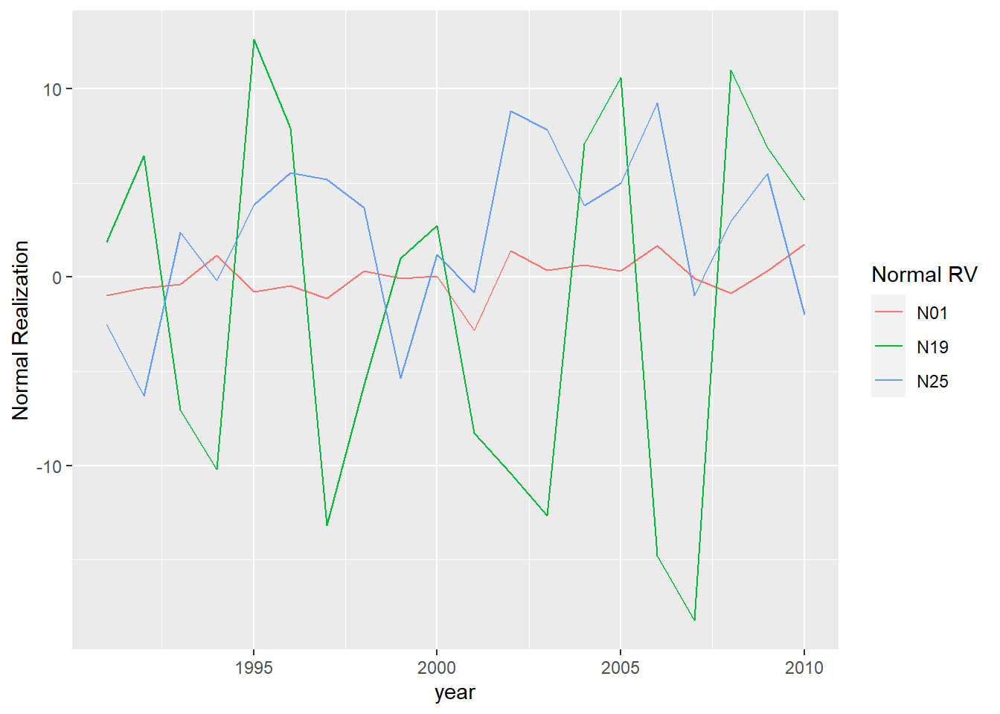